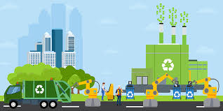
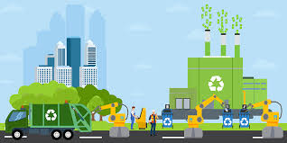

Economía y ambiente
Relación entre sistemas económicos y ecosistemas: integrar costos ambientales y promover incentivos verdes.
Economia
La economía y el ambiente están íntimamente relacionados. La economía, entendida como el sistema de producción, distribución y consumo de bienes y servicios, depende directamente de los recursos naturales que provee el medio ambiente. Al mismo tiempo, las actividades económicas impactan en el entorno, ya sea de forma positiva o negativa. Durante gran parte de la historia, la economía se desarrolló bajo un modelo lineal de extracción, producción y desecho, lo cual ha generado problemas ambientales como el cambio climático, la contaminación y la pérdida de biodiversidad. En las últimas décadas, ha surgido la necesidad de replantear esta relación, buscando un equilibrio entre el crecimiento económico y la sostenibilidad ambiental.
El objetivo de esta investigación es analizar cómo interactúan la economía y el ambiente, cuáles son los principales retos que enfrenta el mundo en este ámbito y qué alternativas se han planteado para lograr un desarrollo sostenible.
Dependencia de la economía en el ambiente
Todos los sectores económicos dependen, en mayor o menor medida, de los recursos naturales. La agricultura requiere suelos fértiles y agua; la industria necesita energía y materias primas; los servicios, aunque menos intensivos en recursos, dependen de un entorno sano que garantice la salud y calidad de vida de la población.
De acuerdo con el Programa de las Naciones Unidas para el Medio Ambiente (PNUMA), más del 40 % de la economía mundial se basa en el uso directo de los recursos naturales. Esto significa que cualquier deterioro ambiental impacta de manera directa en la productividad económica.
Impactos económicos negativos del deterioro ambiental
El crecimiento económico tradicional, basado en la explotación intensiva de los recursos, ha generado múltiples problemas:
• Cambio climático: provocado por la emisión de gases de efecto invernadero, con costos económicos estimados en miles de millones de dólares anuales por desastres naturales, sequías e inundaciones.
• Contaminación: la Organización Mundial de la Salud estima que la contaminación del aire causa alrededor de 7 millones de muertes prematuras al año, además de afectar la productividad laboral y aumentar el gasto en salud.
• Pérdida de biodiversidad: impacta en sectores como la pesca, la agricultura y el turismo, reduciendo las oportunidades económicas a largo plazo.
• Escasez de recursos: el agotamiento de minerales, combustibles fósiles y agua dulce genera conflictos sociales y encarece los procesos productivos.
Economía ambiental y desarrollo sostenible
Para enfrentar estos problemas, surge la economía ambiental, rama que estudia la relación entre la actividad económica y el medio ambiente, proponiendo soluciones que integren la sostenibilidad. Entre sus aportes destacan:
1. El concepto de externalidades: cuando una actividad económica genera efectos no deseados en terceros (como la contaminación), se requiere la intervención del Estado mediante impuestos verdes, regulaciones o incentivos.
2. Valoración económica de los recursos naturales: asignar un valor monetario a bienes como bosques, ríos o aire limpio, para reconocer su importancia en la toma de decisiones.
3. Instrumentos económicos para la sostenibilidad: como el comercio de emisiones de carbono, subsidios a energías renovables o pagos por servicios ambientales.
El concepto clave en este debate es el desarrollo sostenible, definido en 1987 por la Comisión Brundtland como “aquel que satisface las necesidades del presente sin comprometer la capacidad de las generaciones futuras de satisfacer las suyas”. Este enfoque propone un equilibrio entre tres dimensiones: económica, social y ambiental.
Modelos alternativos
En los últimos años han surgido nuevas propuestas para conciliar economía y ambiente:
• Economía circular: busca reemplazar el modelo lineal de “extraer, producir y desechar” por uno en el que los residuos se reutilicen, reciclen o transformen en nuevos recursos.
• Economía verde: promueve el crecimiento económico con bajas emisiones de carbono, eficiencia en el uso de recursos y equidad social.
• Economía azul: se centra en la gestión sostenible de los recursos marinos y costeros, reconociendo su importancia para la seguridad alimentaria y la biodiversidad.
Retos y perspectivas
A pesar de los avances, aún existen grandes desafíos:
1. Dependencia de combustibles fósiles: la transición hacia energías limpias avanza, pero el petróleo, gas y carbón siguen dominando la economía global.
2. Desigualdad entre países: las naciones en desarrollo suelen priorizar el crecimiento económico sobre la protección ambiental, debido a la necesidad de reducir la pobreza.
3. Resistencia política y empresarial: algunos sectores consideran que la regulación ambiental limita la competitividad y el crecimiento económico.
Sin embargo, también existen oportunidades: el mercado de energías renovables, la innovación tecnológica en eficiencia energética y el ecoturismo representan sectores de rápido crecimiento que pueden generar empleo y bienestar económico al mismo tiempo que protegen el ambiente.
Instrumentos económicos
- Impuestos verdes y subsidios ecológicos.
- Mercados de carbono.
- Pagos por servicios ambientales.
Indicadores alternativos
- Huella ecológica.
- PIB verde y capital natural.
- Índice de bienestar sostenible.

 

Ejemplos de aplicación
- Etiquetado ecológico y certificaciones verdes.
- Finanzas sostenibles e inversión responsable.
- Planes nacionales de mitigación y adaptación.